Привет. Ты открыл(а) эту ссылку, значит, кто-то решил, что тебе нужен друг. Хорошие новости: он перед тобой. Листай, изучай характеристики, принимай решение. Спойлер: правильный ответ — «да».
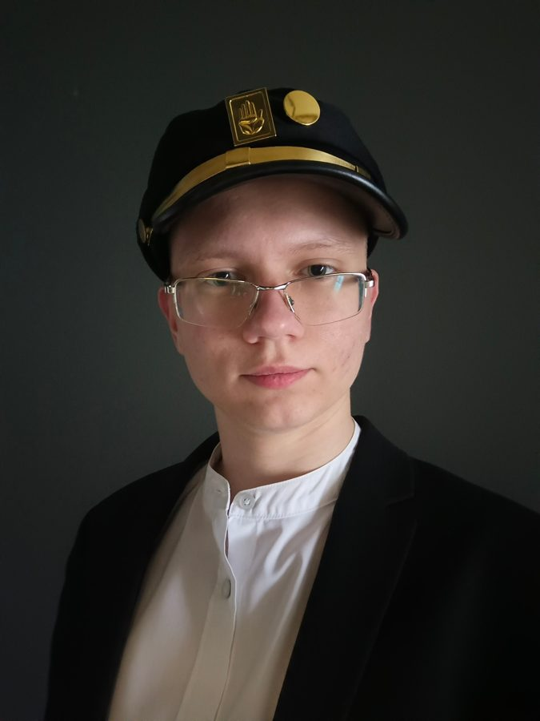
Да, это тот же человек. Нет, он не забудет тебя, когда станет знаменитым. Наверное.
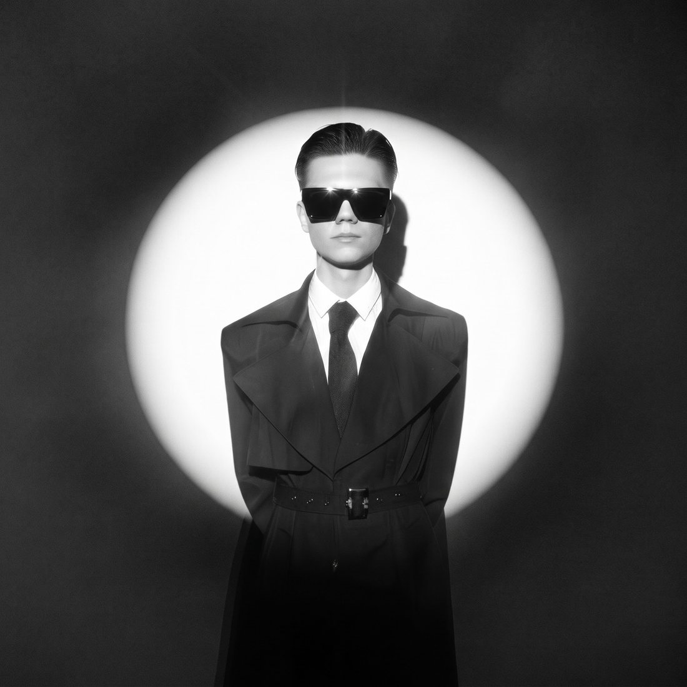
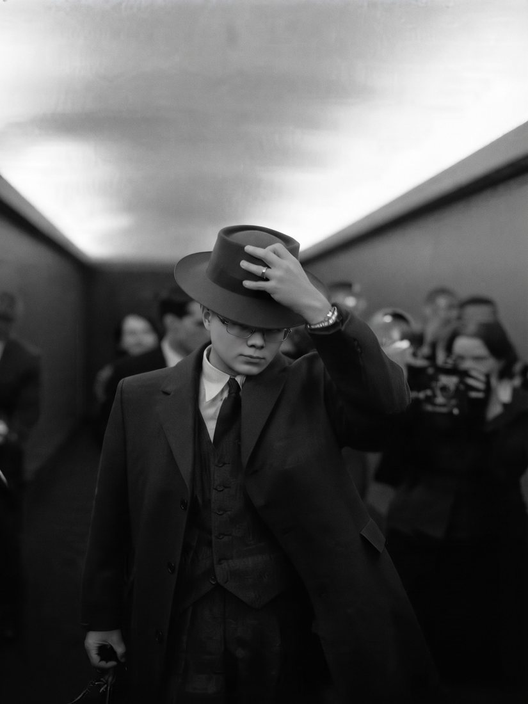
Как у смартфона, только лучше: не садится и не требует обновлений.
Дружишь с одним человеком, а получаешь целую команду. Выгоднее любой подписки.
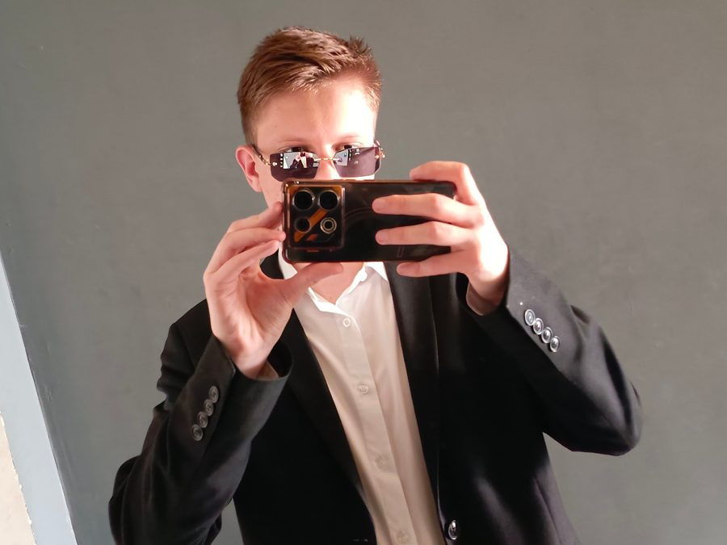
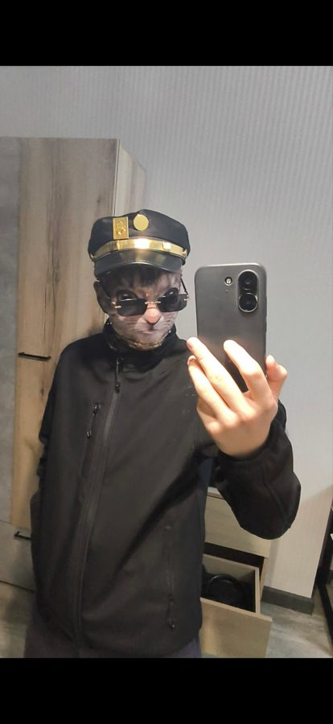
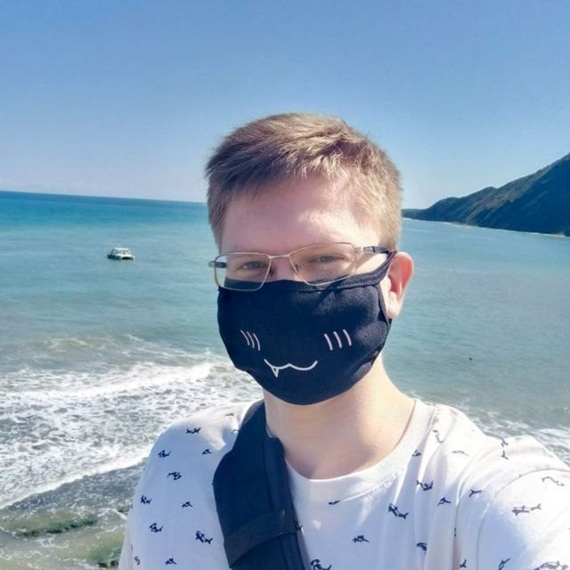
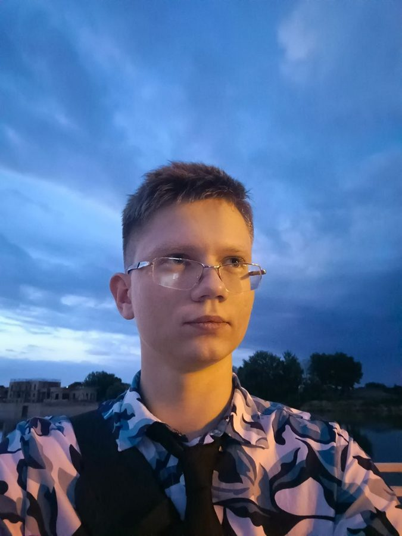
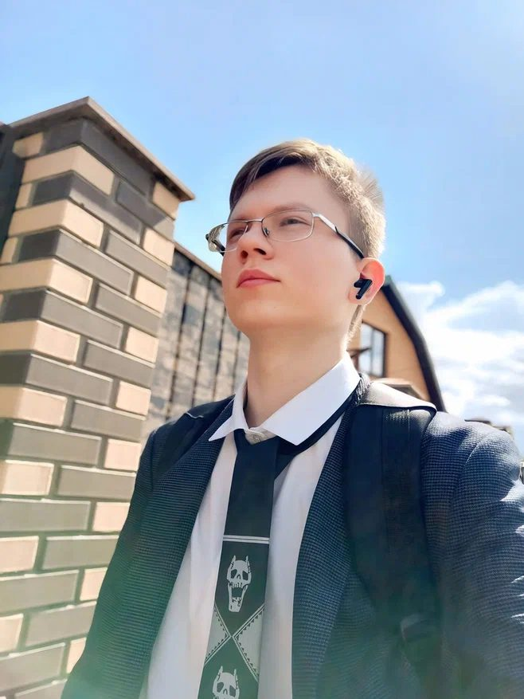
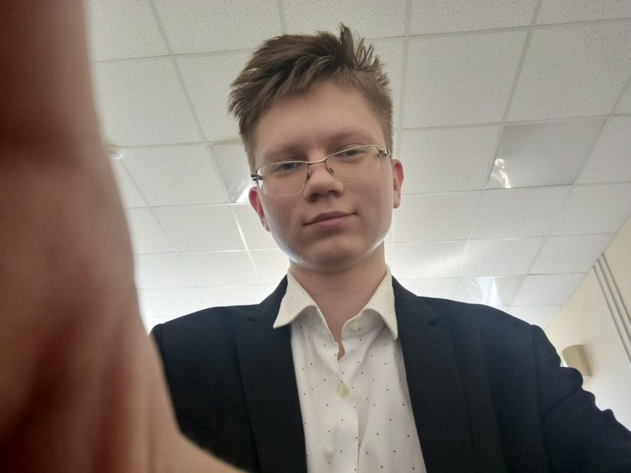
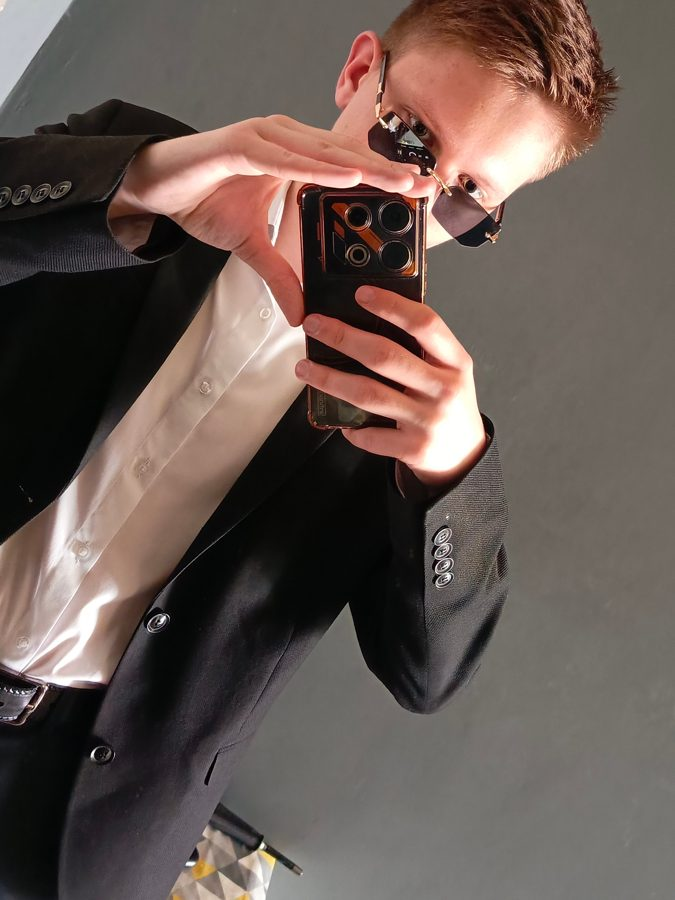
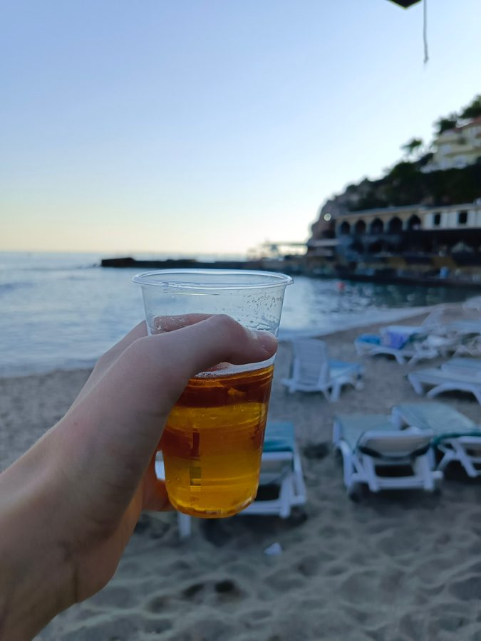
А также за твою зарплату, твой сон и чтобы Wi-Fi ловил везде. Море в комплект не входит, но друг знает, где оно.
Проверка завершена: минусов не обнаружено. Мы искали. Честно.
Здесь пишется код, решаются проблемы и придумываются шутки. Кресло геймерское, значит, и дружба на максимальных настройках графики.
Нужна помощь с компом, сайтом или просто поговорить в 3 ночи — штаб на связи.
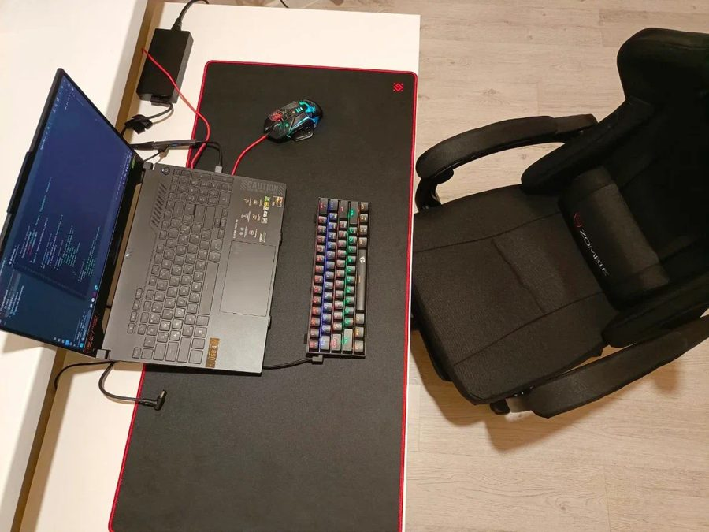
Есть два варианта ответа. Один из них правильный.
Кнопки «нет» нет. Это не баг, это фича.© 2026 · Друг повышенного комфорта · Все права защищены, а ты — под защитой